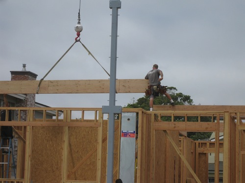
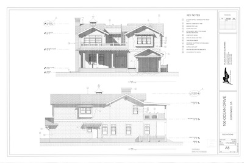

July 15th - September 30th, 2014
Please join Coastal Living Magazine, Flagship Properties, and Flagg Coastal Homes this summer for Coastal Living's 2014 showhouse in Coronado. This is the magazine's first showhouse to be located on the West Coast. Burnham Design of Los Angeles is the selected interior designer for the 2014 showhouse and San Diego-based Topia Land is the landscape architect. This five bedroom oceanfront home is located on Sunset Park on Coronado Island. Flagship Properties and its constuction division Flagg Coastal Homes have developed over 32 homes on the island. The showhome will be featured in the October issue of Coastal Living, and will be open for tours starting July 15, 2014. Coronado is the home of the US Navy Seals, and the Navy Seal Foundation has been selected as the beneficiary of the showhouse tours.
Take the tour.
Bring your friends.
Support our Navy Seals and their families as you enjoy a West Coast beach home.
Tickets for the showhouse tour will available for purchase at 100 Ocean Dr. on the day of the tour. In addition, tickets will go on sale online in April. In the meantime, let us know your interested in tour tickets and you will have first access to purchase them when they go on sale..
Address:
100 Ocean Blvd.
Coronado CA, 92118
For directions to the showhouse, use the link provided below.

Bicycle parking will be available next door during the tour.
Flagship Properties, Inc. is a privately held real estate development and brokerage company located in Coronado California. Founded in 1975, the company has developed, marketed and sold quality residential and office building developments throughout Southern California. Since 1999, Flagship has specialized in "Coastal Homes" primarily in Coronado. FLAGG COASTAL HOMES, the separate building company, was founded in 2007 to complement Flagship's development and brokerage activities. FLAGG is a licensed contractor, (Lic.# 898050) specializing in Design/Build activities.
FLAGG has been a West Coast innovator in using modern composite bulding materials which were designed and formulated to withstand the direct sun and coastal environment.
The professionals at Flagg, particularly Carrie and John OBrien, Mark Blore of BSC, Martin Brown of St. Lucia Builders and Beth Delano of Shipshape Interiors are all dedicated to building and marketing the finest coastal homes in California.
Whether overlooking the bay, or located on a quiet tree-lined street mid island, FLAGG homes are distinctive, inviting and informal...... the perfect beach getaways.
The Navy SEAL Foundation was selected by the Showhouse Team as the beneficiary of the 2014 Showhouse. Last year, 2013, marked the 50th Anniversary of the U.S. Navy Seals, and Coronado has been their home since the beginning. Established to serve U.S. Navy SEALs, Special Warfare Combatant-craft Crewmen, Naval Special Warfare (NSW) support personnel, and their families, the Navy SEAL Foundation offers critical support to Naval Special Warfare commands, active-duty personnel, their families and veterans of NSW.
To view other Flagship Homes, please visit the Flagship Properties website.

Also view the Flagg Coastal Homes profile on Houzz.com

Flagship and its related homebuilding company, FLAGG Coastal Homes are experienced coastal builders and developers, subscribing to the notion that a beach community home must withstand the harsh coastal environment. Flagg specifies copper flashing, concrete composite siding, clad windows and stainless steel hardware, all building materials that have demonstrated a particular strong resistance to the environment.
Based on our experience in developing and re-developing more than 30 homes in Coronado, we have a keen understanding of both the permitting process for Coronado and the island geology. That experience translates into a comfort level and assurances that the home is in the hands of experienced professionals.

|
 |
|  |
Coronado, also known as Coronado Island, is a resort city located just North of the Mexican border in San Diego County. In the 2010 census, Coronado's population was listed at 24,697. Coronado lies across the bay from downtown San Diego on a peninsula connected by a 10-mile isthmus called the Silver Strand. In May 2012, Dr. Stephen Leatherman, Director of the Laboratory for Coastal Research, ranked Coronado Beach as the best beach in the United States.
Coronado is Spanish for "the crowned one", and thus it is nicknamed The Crown City. Coronado was originally founded as a resort community, anchored by the iconic Hotel del Coronado. Since its founding, Coronado has enjoyed a particularly special niche as a resort island.
Coastal Living Magazine, Flagship Properties and Flagg Coastal Homes invite you to tour the 2014 Showhouse, the first ever on the West Coast for the magazine.
Quality, style and crafstmanship are features of this Oceanfront showhouse. Join your friends and associates in a tour of the latest coastal-inspired resort home. House tours will be available starting July 15th through September 2014. For further information please visit Flagg Coastal Homes' website. See link below
{kind=link}
{kind=link}
{kind=link}
{kind=link}
{kind=link}
{kind=link}
{kind=link}
{kind=link}
{kind=link}
{kind=link}
{kind=link}